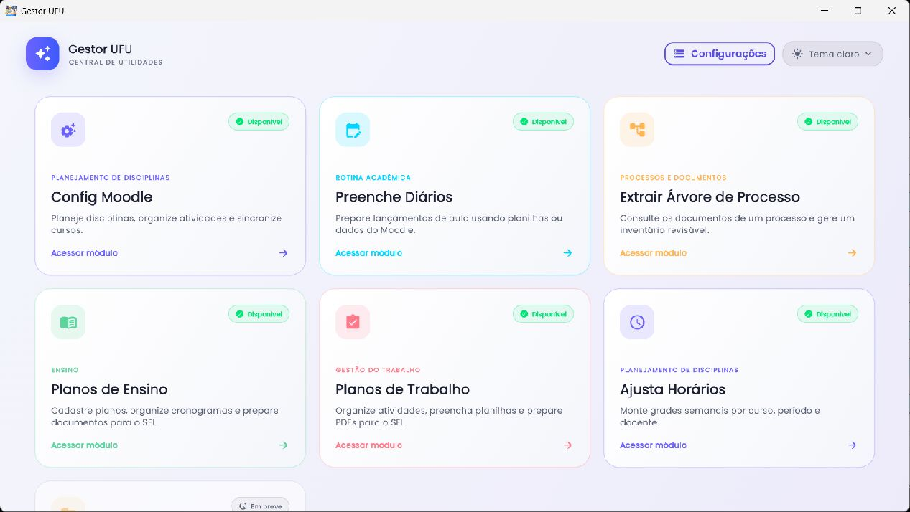
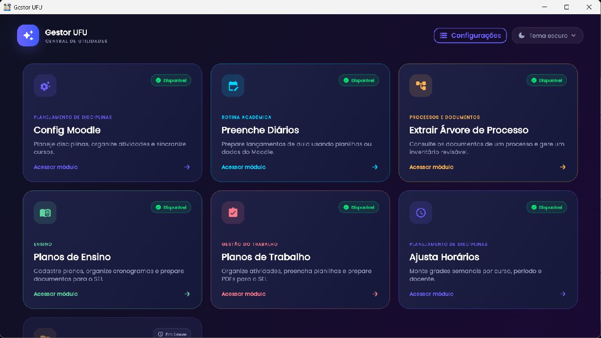

Manual do usuário · versão de referência 1.1.7+9
Aprenda a usar o Gestor UFU
Este guia acompanha os recursos disponíveis no código da versão 1.1.7+9, commit 8d404b1e, revisado em 2 de novembro de 2026. Os exemplos visuais foram capturados em uma cópia local isolada e com dados fictícios.
O Gestor UFU reúne ferramentas acadêmicas em módulos separados. Os dados locais são guardados nas preferências do aplicativo; é possível configurar um arquivo compartilhado de dados e importar ou exportar cópias de segurança. Moodle, Portal do Docente e SEI continuam exigindo autenticação manual nos respectivos sites.


Índice completo por módulo
Como navegar pelo manual
Use a busca no cabeçalho para localizar um nome de tela, campo, opção ou tarefa. Cada página tem um índice lateral, links entre assuntos relacionados e navegação anterior/próxima no final. Em telas estreitas, o índice passa para o início da página. As imagens podem ser abertas em tamanho original em uma nova aba.
Estado e escopo da documentação
As seis rotas acessíveis no painel são documentadas como módulos disponíveis. “Inserir Documentos no SEI” aparece no painel como recurso em breve, mas não possui rota funcional nesta versão. A integração autenticada só pôde ser documentada pelo código e pela tela de conexão, pois não havia conta de demonstração autorizada para os ambientes institucionais.
Comece por Primeiros passos ou escolha diretamente um módulo no índice.